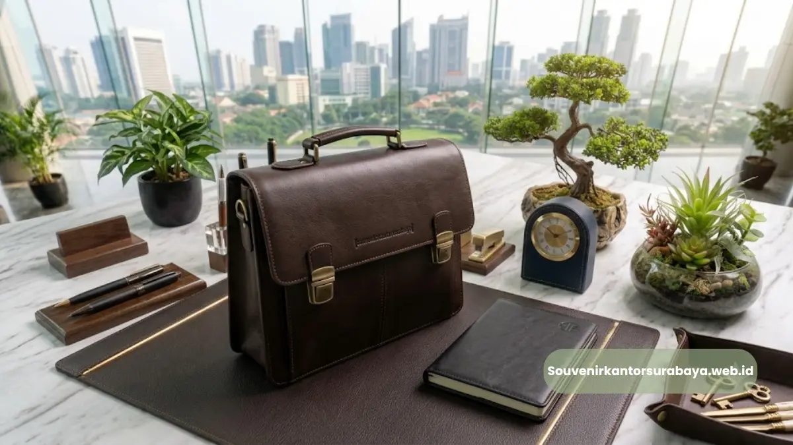
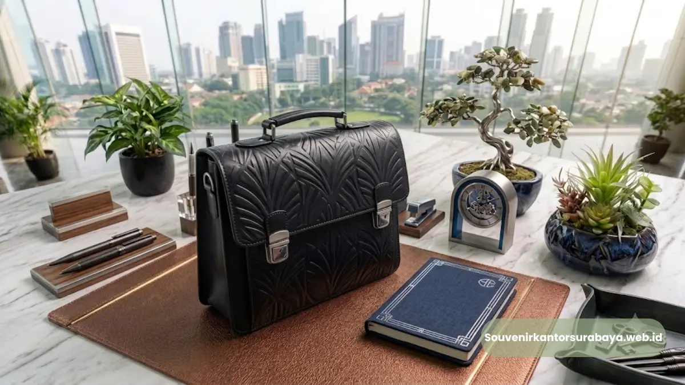
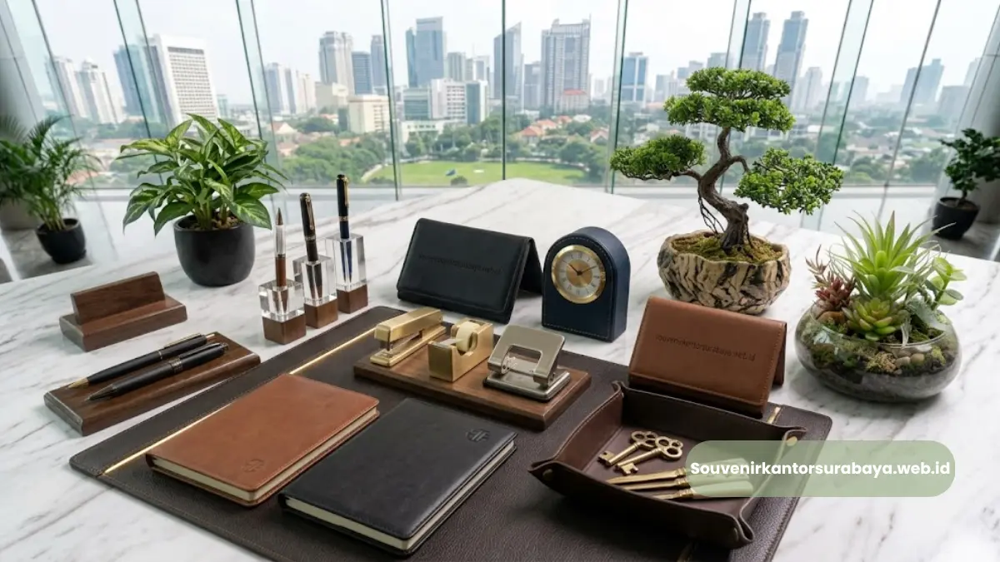
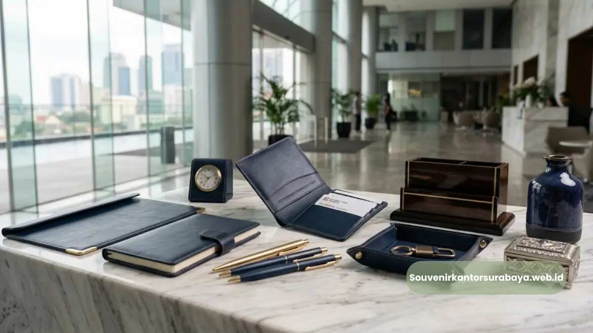

- Mengapa Tas Kerja Kulit Pria Eksekutif Perusahaan Surabaya Jadi Pilihan Utama Korporasi?
- Apa Saja Kriteria Utama Tas Kerja Kulit Pria Eksekutif Perusahaan Surabaya yang Berkualitas Tinggi?
- Bagaimana Cara Memilih Tas Kerja Kulit Pria Eksekutif Perusahaan Surabaya Sesuai Kebutuhan Industri?
- Faktor Apa Saja yang Memengaruhi Durabilitas Tas Kerja Kulit Eksekutif?
- Kesalahan Apa yang Harus Dihindari Saat Membeli Tas Kerja Kulit Pria Eksekutif Perusahaan Surabaya?
Tas kerja kulit pria eksekutif perusahaan Surabaya merupakan pilihan tas dokumen premium berbahan kulit asli yang dirancang khusus untuk menunjang profesionalisme eksekutif korporasi.
- Tas kerja kulit asli memberikan citra profesional, daya tahan tinggi, dan nilai estetika eksklusif bagi eksekutif perusahaan.
- Pemilihan material genuine leather atau full-grain memastikan kekuatan struktur tas saat membawa dokumen penting dan laptop.
- Surabaya menjadi pusat manufaktur dan penyedia souvenir kantor Surabaya yang melayani pemesanan custom logo korporat.
- Fitur kompartemen terorganisir dan jahitan presisi menjadi standar utama tas kerja kelas eksekutif.
- Pengadaan tas kerja kulit premium sangat efektif meningkatkan reputasi merek perusahaan saat diberikan sebagai hadiah relasi bisnis.
Mengapa Tas Kerja Kulit Pria Eksekutif Perusahaan Surabaya Jadi Pilihan Utama Korporasi?
Tas kerja kulit pria eksekutif perusahaan Surabaya memberikan kombinasi sempurna antara ketahanan material jangka panjang, kerapian detail, serta prestise visual yang mengangkat reputasi profesional penggunanya.
Menurut laporan Asosiasi Persepatuan dan Kerajinan Kulit Indonesia periode 2025-2026, permintaan produk kulit asli untuk sektor merchandise korporat di Jawa Timur mengalami kenaikan sebesar 18.5% year-on-year.
Peningkatan ini didorong oleh kebutuhan perusahaan manufaktur dan perbankan di Surabaya akan produk berstandar tinggi.
Menggunakan tas dokumen berbahan kulit asli tidak hanya soal fungsi membawa barang. Material kulit asli memiliki keunggulan fleksibilitas serat, daya tahan terhadap gesekan, serta patina alami yang semakin menawan seiring berjalannya waktu.
Bagi manajer senior maupun direksi, memiliki tas kerja berkualitas tinggi adalah investasi penampilan yang mencerminkan ketegasan dan kepemimpinan.
Pusat bisnis di Surabaya yang berkembang pesat menuntut standar penampilan eksekutif yang selalu siap menghadiri pertemuan penting.
Oleh karena itu, memilih tas kerja yang diproduksi secara teliti dengan jahitan rapi serta konstruksi kokoh menjadi faktor kunci utama bagi kelancaran mobilitas harian.

Apa Saja Kriteria Utama Tas Kerja Kulit Pria Eksekutif Perusahaan Surabaya yang Berkualitas Tinggi?
Kriteria utama tas kerja kulit pria eksekutif perusahaan Surabaya meliputi penggunaan bahan kulit asli berkualitas premium, konstruksi rangka yang kokoh, serta penyelesaian jahitan presisi berstandar ekspor.
Berdasarkan riset pasar industri barang kulit Surabaya tahun 2025, sebanyak 64.2% pembeli korporat memprioritaskan kekuatan resleting hardware kuningan dan kompartemen laptop terproteksi saat memilih tas kerja eksekutif.
Untuk memastikan produk memenuhi standar eksekutif, berikut adalah faktor-faktor krusial yang wajib diperhatikan:
- Material Kulit Asli: Pilih jenis kulit full grain atau top grain yang memiliki ketahanan optimal terhadap robekan dan perubahan cuaca.
- Kompartemen fungsional: Tersedia kantong khusus laptop berbusa tebal, ruang dokumen A4 terpisah, serta organizer alat tulis yang tertata rapi.
- Hardware dan Aksesori: Resleting logam berkualitas tinggi berbahan kuningan atau stainless steel yang tahan karat dan tidak mudah macet.
- Tali Selempang Ergonomis: Dilengkapi bantalan bahu berlapis busa empuk untuk memberikan kenyamanan ekstra saat dibawa beraktivitas outdoor.
- Detail Custom Branding: Tempat penempatan logo korporat yang rapi melalui teknik emboss atau laser engraving tanpa merusak tekstur kulit.
Memahami detail spesifikasi teknis ini membantu tim pengadaan barang dalam menentukan pilihan produk yang sesuai dengan anggaran dan citra perusahaan.
Bagaimana Cara Memilih Tas Kerja Kulit Pria Eksekutif Perusahaan Surabaya Sesuai Kebutuhan Industri?
Cara memilih tas kerja kulit pria eksekutif perusahaan Surabaya yang sesuai adalah dengan menyesuaikan ukuran tas dengan dimensi laptop harian, memperhatikan tingkat formalitas acara bisnis, serta mengonfirmasi kapasitas simpan barang.
Setiap sektor industri memiliki karakter mobilitas yang berbeda, sehingga pemilihan desain tas harus menyelaraskan antara aspek estetika dan fungsi praktis.
Pada sektor perbankan dan jasa keuangan, desain briefcase klasik berkontur tegas dengan warna hitam atau dark brown lebih disukai karena memancarkan kesan formal.
Sementara itu, untuk industri kreatif dan teknologi, model messenger bag berbahan kulit crazy horse dengan nuansa cokelat tan memberikan kesan dinamis namun tetap elegan.
Silakan pelajari perbandingan mendalam mengenai variasi produk unggulan dalam artikel koleksi tas kerja kulit pria eksekutif Surabaya untuk souvenir kantor agar Anda mendapatkan gambaran utuh sesuai kebutuhan korporat Anda.
Baca Juga
Faktor Apa Saja yang Memengaruhi Durabilitas Tas Kerja Kulit Eksekutif?
Faktor yang memengaruhi durabilitas tas kerja kulit eksekutif adalah teknik penyamakan kulit, ketebalan benang jahitan, kualitas furing bagian dalam, serta perawatan rutin dari pengguna.
Penyamakan nabati (vegetable tanned) dikenal menghasilkan kulit yang lebih padat dan ramah lingkungan, sangat cocok untuk konstruksi tas kerja berstruktur kaku.
Penggunaan lapisan furing berbahan kain suede atau beludru berkualitas tinggi di bagian dalam tas berfungsi melindungi barang elektronik dari goresan.
Selain itu, teknik penjahitan double-stitch pada titik-titik tumpuan beban seperti pegangan tangan (handle) dan sambungan tali selempang mencegah risiko tali putus saat membawa beban berat.
Untuk memperdalam pemahaman mengenai perawatan, Anda dapat membaca panduan perawatan tas kerja kulit pria eksekutif Surabaya yang menjelaskan teknik pembersihan secara berkala agar warna dan tekstur kulit tetap terjaga sempurna.
Kesalahan Apa yang Harus Dihindari Saat Membeli Tas Kerja Kulit Pria Eksekutif Perusahaan Surabaya?
Kesalahan yang harus dihindari saat membeli tas kerja kulit pria eksekutif perusahaan Surabaya adalah tergiur harga murah tanpa mengecek keaslian kulit, mengabaikan kualitas resleting, serta membeli tas tanpa garansi jahitan.
Banyak produk sintetis di pasaran yang tampak serupa di permukaan, namun akan mengelupas dan rusak dalam hitungan bulan penggunaan intensif.
Hindari juga memilih tas dengan ukuran yang terlalu sempit untuk laptop standar kantor 14 hingga 15.6 inci.
Tas yang terlalu dipaksakan menampung muatan melebihi kapasitasnya akan membuat bentuk kulit menjadi melar dan cepat merusak alur resleting utama.

Hawa Nadira
Tim penulis CorporateGifts ID berfokus pada strategi souvenir kantor, merchandise korporat, dan inovasi brand untuk klien B2B.
Keahlian: Branding perusahaan, produksi souvenir, paket event, desain materi promosi.
Artikel Terkait

Inspirasi Desain Dompet Kartu Nama Kulit Elegan untuk Mitra Bisnis
Dompet kartu nama kulit yang elegan untuk mitra bisnis umumnya mengutamakan warna netral, logo minimalis, dan detail finishing rapi.
Baca Selengkapnya
Harga Dompet Kartu Nama Kulit Custom Logo di Surabaya
Harga dompet kulit ditentukan oleh kombinasi bahan kulit, teknik pencetakan logo, desain, dan jumlah pesanan.
Baca Selengkapnya
Dompet Kartu Nama Kulit untuk Klien Bisnis Surabaya
Souvenir korporat berbahan kulit yang dirancang untuk menyimpan kartu nama secara rapi sekaligus memperkuat citra profesional.
Baca Selengkapnya